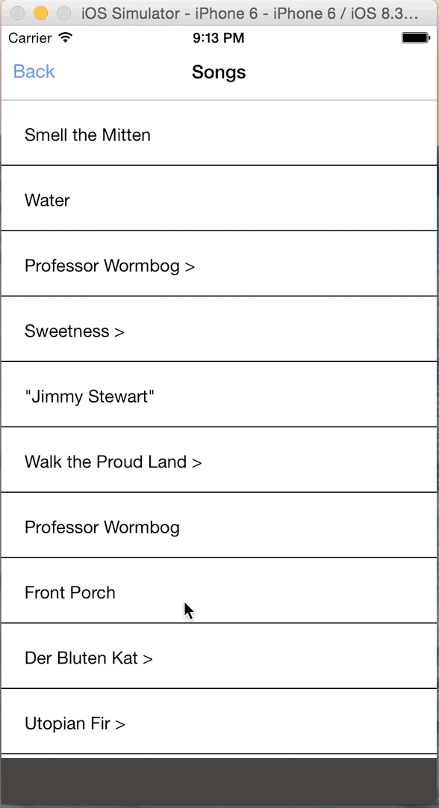

React Native is almost 2 months old since it was released publicly in March. It's amazing what this framework provides to JavaScript development community. Kudos to the facebook engineers and the OSS community! When it was first released I had to get my hands on it and build an app. In this first installment post I want to walk through my experience and share with you what I discovered. I built an app that plays audio from the archive.org website. It was a really nice experience and I'm really pleased with the way it turned out for the amount of time that I spent working on it. Overall, React Native is awesome and very promising. I'm really excited for what the future of JavaScript holds! =) In this first segment, I am going to discuss getting started with Navigation. In future segments I will discuss code structure, adding flux to your app, and playing music with plugin modules.

So where should you start when writing a React Native app? I think one of the most important decisions for me was Navigation. How is my app going to feel? How will users get back and forth between views in my app? If you're like me, you may have jumped over to the React Native docs page to check out what your options are. Quickly, you'll see that there are two options for Navigation: Navigator and NavigatorIOS. So which one should you choose? Well, if you want to adhere strictly to the IOS navigation and get the "truest" sense of iOS navigation, I would suggest using NavigatorIOS which wraps UIKit navigation. However, if you're looking for something custom with a little more flexibility that still looks and feels nice, you can go with Navigator. For this example app I am going to use Navigator as I've grown to be most comfortable with it in the past few weeks.
So how does Navigator actually work? What do I need to do to get started? Well, one main thing to get down is that it refers to "pages" in your app as scenes. So say you have a home scene that may have only a text input and a button. This would be one scene in your app. Then maybe you have a search results list view, that would be another scene. Navigator will keep track of the routes internally and push, pop as required. It does all the hard work for you. So the next thing you may be thinking is, how does it animate, what are my options? Navigator already has some built in animations for when transitioning between scenes. They are:
PushFromRight
FloatFromRight
FloatFromBottom
HorizontalSwipeJump
So basically how Navigator works is that it will sit in the parent component, if you're starting a boilerplate app the parent component is inside index.ios.js. Inside here you will need to import the Navigator component from the React library. One important thing to note is that Navigator has a few important props for handling how scenes in your app are setup and displayed. The first important one is initialRoute which bascially handles the base route for your app. It may look like this:
initialRoute={{
component: MusicApp,
navigationBar: <NavigationBar title="Music App" />,
title: 'Music App',
}}
here we provide it a React component and here I am using a RN custom component react-native-navbar as my navbar. It's not required that you use react-native-navbar and you can roll your own. There are some good examples over in the offical RN Examples repo. For the sake of getting something up quickly and looks nice in the app, I found that react-native-navbar did the job just fine.
The next important prop for Navigator is renderScene. This function will get called everytime you push or pop to the Navigation stack. Essentially, it's job is to setup the scene when your user is going backwards or forwards. So, you would provide a function to your renderScene prop: renderScene={this.renderScene}.
Now, here is an example of how I have done a renderScene,
renderScene(route, navigator) {
var Component = route.component;
var navBar = route.navigationBar;
if (navBar) {
navBar = React.addons.cloneWithProps(navBar, {
navigator: navigator,
route: route
});
}
return (
<View style={styles.navContainer}>
{navBar}
<Component navigator={navigator} {...route.props} />
<CurrentTrack />
</View>
);
},
There's a lot going on up there so let's take it line by line. As you can see, the renderScene function is always called with the route that you are transitioning to and the navigator component itself. When this function is called, we can grab the next component off the route object and if it has a navbar we can get that too. I'll get to what that looks like when your push a route down below in just a little bit. But let's finish with this renderScene function. So what we do next is check if the next route has a navbar, and if so we use a React internal tool to make a copy of that and pass in the route and navigator as props. (Note: cloneWithProps is deprecated and we probably should be using cloneElement: https://facebook.github.io/react/docs/clone-with-props.html).
You can push a route from anywhere where you have a navigator instance. As you can see, you can simply pass it the component instance, as well as the title, navbar, props etc. One important thing to note below is the sceneConfig property. Here we are overriding the default navigation animation by providing the Navigator.SceneConfigs.FloatFromBottom. So, instead of FloatFromRight, our app will FloatFromBottom when transitioning in. =)
this.props.navigator.push({
title: 'Search',
component: SearchList,
navigationBar: <NavigationBar title="Search"/>,
props: {
query: this.state.input
},
sceneConfig: {
...Navigator.SceneConfigs.FloatFromBottom,
gestures: {}
}
})
That's all I have for the first segment. In the next segment I will jump into the actual code and discuss code structure and adding Flux to a RN app. =)